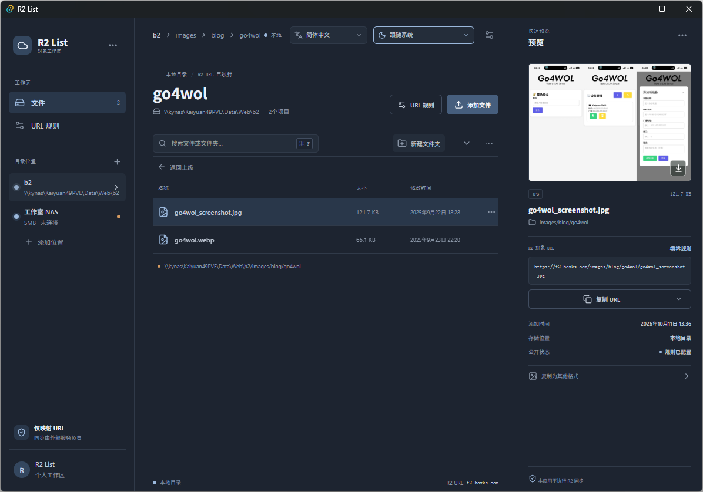

文件工作区
浏览、搜索本地目录，新建文件夹或导入文件；重名文件会自动改名，不覆盖原文件。
R2 List 是一个轻量桌面文件工作区。选择本地目录，即可根据相对路径生成 Cloudflare R2 对象 URL，并快速复制为 URL、Markdown 或 HTML 链接。

浏览、搜索本地目录，新建文件夹或导入文件；重名文件会自动改名，不覆盖原文件。
根据目录相对路径生成 R2 对象 URL，并复制为纯链接、Markdown 或 HTML 格式。
基于 Tauri 构建，支持 Windows、macOS 和 Linux，并提供多语言界面与主题切换。